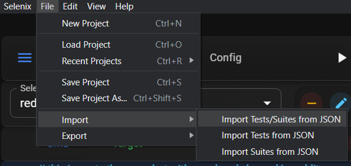
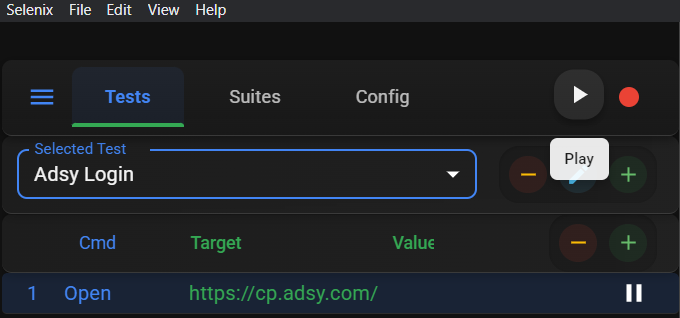

Get started instantly with our library of pre-built workflows. No need to build from scratch—just download, customize if needed, and run!
Get up and running in minutes with pre-built automation workflows.
See how experienced users structure complex automations.
Use templates as-is or customize them to fit your specific needs.
All templates are verified and tested by our team for reliability.
Find the perfect automation template for your use case and get started right away.
Fetching the latest automation templates from our database.
Get started with pre-built templates in just a few simple steps.
Browse our library and download the template that fits your needs.
Open Selenix application and import the template file through the "Import" option.
Customize the template to match your specific requirements by modifying URL, paths, variable names, page numbers etc. (optional).
Click "Run" and watch as Selenix automates your tasks for you!
Download Selenix today and access all these templates to start saving time immediately.